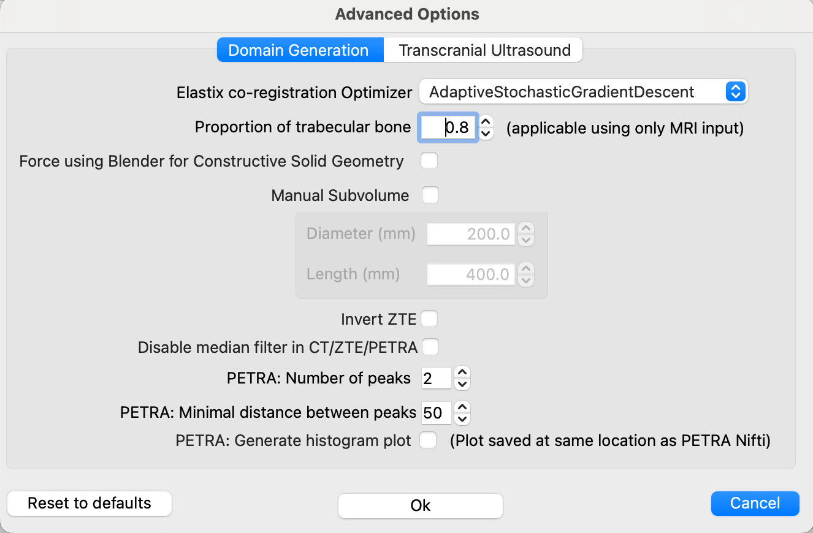

Advanced features
Since release 0.3.5, BabelBrain includes a menu for advanced options controlling low-level details in BabelBrain.
If any of these options are modified, they will remain persistent on the next BabelBrain sessions. Select Reset to defaults to restore original values.
Domain Generation

Elastix co-registration Optimizer
The default optimizer for Elastix, AdaptiveStochasticGradientDescent, works almost for every combination of CT->T1W and ZTE/PETRA->T1W. However, as much more testing has started to accumulate, we noticed that the CT->T1W was not working in some cases. We tested different options in Elastix, and the FiniteDifferenceGradientDescent and QuasiNewtonLBFGS seem to work well as a replacement. If the coregistration from CT to T1W is not working as expected, try one of these two other options. FiniteDifferenceGradientDescent seems to work better.
Proportion of trabecular bone
By default, the percentage of trabecular is 80% using the line of sight of the trajectory. If the trajectory crosses very thin regions like the parietal bone, there may be a chance all region is considered trabecular, which may not be desired. A warning message will be printed out in the terminal output in that case. In such cases as the parietal bone, consider reducing a lower value of trabecular, such as 0.1 or 0.2.
Segment white matter, gray matter and CSF
Select this option to use SimNIBS segmentation of brain tissue regions. If selected, the following acoustic properties will be used instead of the one used in the original BabelBrain paper:
| Tissue type | density (kg/m^3) | speed of sound (m/s) | attenuation (Np/m/MHz) | perfusion (ml/min/kg) | specific heat (J/kg/°C) | therm. conductivity (W/m/°C) | absorption |
|---|---|---|---|---|---|---|---|
| White matter | 1041 | 1537 | 10.2 | 212 | 3583 | 0.48 | 0.85 |
| Gray matter | 1045 | 1520 | 4.4 | 764 | 3696 | 0.55 | 0.85 |
| CSF | 1007 | 1507 | 0.09 | 0 | 4096 | 0.57 | 0 |
Values were from averages from the IT'IS database and Labuda et al., 2022
Brain tissue segmentation will be shown after executing Step 1.

PlanTUS integration
See section for PlanTUS integration
Force using Blender for Constructive Solid Geometry
While pycork seems to do a great replacement, we identified that in some instances when using the subvolume feature there was a crash in the low pycork library. Forcing using Blender instead can help to run those special cases.
Manual Subvolume
This feature is intended to give a bit more control for scenarios where the trajectory is regions where the skin mask may cause some issues, especially in targets near the back of the head. For most targets, there is no need to make any adjustments, but we have spotted a few cases (i.e., EEG-P7 location) in which the skin mask of the back of the head was pushing the whole domain and causing issues to place correctly the transducer. For these scenarios, adjusting a subvolume to extract for the simulations can mitigate these issues. This can also help to reduce image size for high-resolution cases.
Invert ZTE
In GE scanners, the oZTEo produces inverted MR images and can't be disabled. While we recommend using 3dRadial-based sequences for ZTE scans, 3dRadial may not be available in all scanners. If oZTEo is used, please activate this new option, otherwise an error will occur during the processing.
Generate air regions
Create masks for air regions if using CT, PETRA or ZTE input. Highly recommended to model far field reflective standing waves.
PETRA conversion parameters
The number of bins (default of 2) and minimal distance of bins (default to 50) are now configurable. This helps to match the functionality of the UCL's petra-to-ct tool. Adjust this if the PETRA conversion is not selecting correctly the bone region. There is also an option to create the histogram as done in the UCL's tool.
Linear ZTE and PETRA conversion formulas
Adjust these linear conversion formulas between ZTE/PETRA signal and pseudo CT if re-fitting done at your local site as reported for (ZTE)[https://doi.org/10.1109/TUFFC.2022.3198522] or (PETRA)[https://doi.org/10.48550/arXiv.2508.01050].
Transcranial Ultrasound

See section for Transducer Calibration